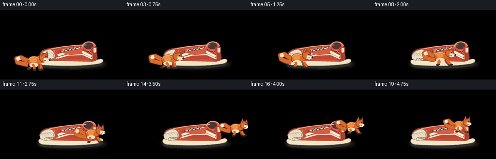
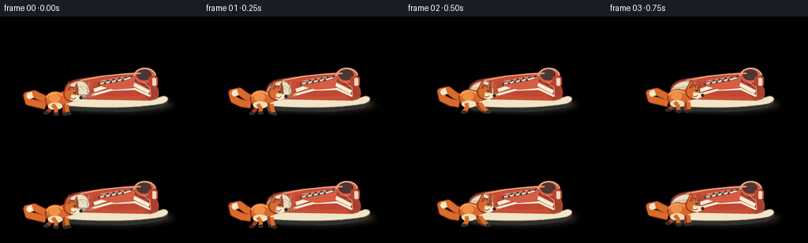
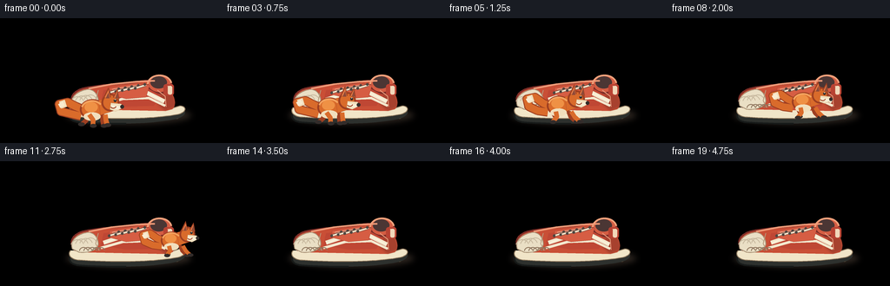
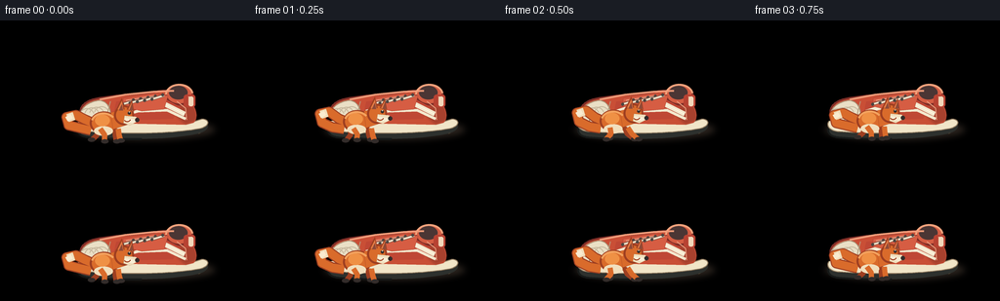
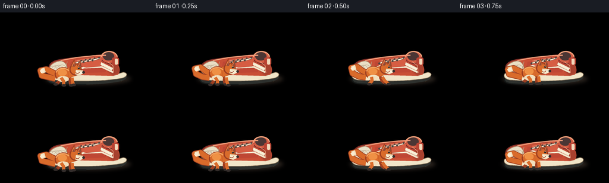
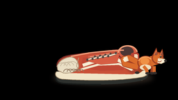
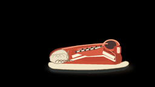
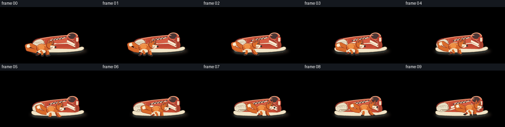
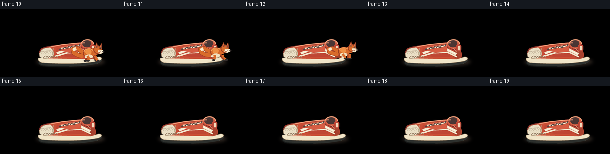
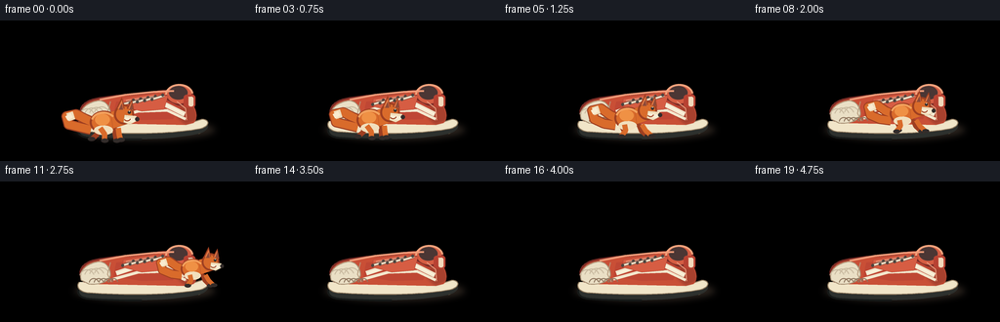

CODING AGENTS AS PIXEL WORLD MODELS
traex/DeepSeek-V4.1-Flash · dynamic_spatial_relationship_0028
点击播放 · 原生 RGB 像素
逐轮保存的候选
回放视频、检查图与代码变化。
每份候选均可单独播放。实际图片检查记录在下方工具轨迹中。
候选 01播放与检查图
点击播放 · 原生 RGB 像素


展开代码变化
--- 上一保存版本
+++ 本次保存版本
@@ -0,0 +1,403 @@
+from pathlib import Path
+import math
+
+import numpy as np
+from PIL import Image, ImageDraw, ImageFilter
+
+import artifact_io
+
+
+W, H = 256, 144
+FRAMES = 20
+FPS = 4.0
+S = 5 # Supersampling factor for smooth, stable edges.
+
+
+def rgb(hex_value):
+ hex_value = hex_value.lstrip("#")
+ return tuple(int(hex_value[i:i + 2], 16) for i in (0, 2, 4))
+
+
+def mix(a, b, t):
+ return tuple(round(a[i] * (1.0 - t) + b[i] * t) for i in range(3))
+
+
+def p(point):
+ return (round(point[0] * S), round(point[1] * S))
+
+
+def pts(points):
+ return [p(point) for point in points]
+
+
+def cubic(p0, p1, p2, p3, steps=28):
+ result = []
+ for i in range(steps):
+ t = i / (steps - 1)
+ u = 1.0 - t
+ x = u ** 3 * p0[0] + 3 * u * u * t * p1[0] + 3 * u * t * t * p2[0] + t ** 3 * p3[0]
+ y = u ** 3 * p0[1] + 3 * u * u * t * p1[1] + 3 * u * t * t * p2[1] + t ** 3 * p3[1]
+ result.append((x, y))
+ return result
+
+
+def smoothstep(t):
+ t = max(0.0, min(1.0, t))
+ return t * t * (3.0 - 2.0 * t)
+
+
+def interpolate_path(frame):
+ keys = [
+ (0, 72.0, 124.0, 1.02, 0.00),
+ (4, 96.0, 120.0, 1.00, 0.00),
+ (8, 143.0, 114.0, 0.96, 0.00),
+ (11, 190.0, 109.0, 0.92, 0.00),
+ (12, 211.0, 106.0, 0.90, 0.00),
+ (13, 228.0, 101.0, 0.88, 0.00),
+ (14, 232.0, 96.0, 0.87, 0.00),
+ (16, 215.0, 91.0, 0.85, 0.00),
+ (19, 181.0, 88.0, 0.82, 0.00),
+ ]
+ for i in range(len(keys) - 1):
+ a, b = keys[i], keys[i + 1]
+ if a[0] <= frame <= b[0]:
+ u = smoothstep((frame - a[0]) / max(1, b[0] - a[0]))
+ return tuple(a[j] * (1.0 - u) + b[j] * u for j in range(1, 5))
+ return keys[-1][1:]
+
+
+def make_background():
+ img = Image.new("RGB", (W * S, H * S), rgb("#aebbb4"))
+ draw = ImageDraw.Draw(img)
+
+ # Soft studio wall and sunlit floor.
+ wall_top = rgb("#78969d")
+ wall_bottom = rgb("#c9d1c3")
+ for y in range(0, 94 * S):
+ t = y / (94 * S)
+ col = mix(wall_top, wall_bottom, smoothstep(t))
+ draw.rectangle((0, y, W * S, y), fill=col)
+
+ floor_top = rgb("#b78a55")
+ floor_bottom = rgb("#e1b77c")
+ for y in range(92 * S, H * S):
+ t = (y - 92 * S) / ((H - 92) * S)
+ col = mix(floor_top, floor_bottom, t)
+ draw.rectangle((0, y, W * S, y), fill=col)
+
+ # Warm pool of light from the upper left.
+ light = Image.new("RGBA", img.size, (0, 0, 0, 0))
+ ld = ImageDraw.Draw(light)
+ ld.ellipse((-95 * S, -105 * S, 255 * S, 170 * S), fill=(255, 236, 191, 50))
+ light = light.filter(ImageFilter.GaussianBlur(18 * S))
+ img = Image.alpha_composite(img.convert("RGBA"), light).convert("RGB")
+ draw = ImageDraw.Draw(img)
+
+ # Baseboard.
+ draw.rectangle((0, 88 * S, W * S, 94 * S), fill=rgb("#f0e4ca"))
+ draw.rectangle((0, 88 * S, W * S, 90 * S), fill=rgb("#fff1d5"))
+ draw.rectangle((0, 93 * S, W * S, 95 * S), fill=rgb("#8e765c"))
+ draw.line(pts([(0, 90), (256, 90)]), fill=rgb("#b7aa91"), width=max(1, S))
+
+ # Floorboards converge gently toward the back of the room.
+ board_colors = [rgb("#c99a61"), rgb("#d3a66c"), rgb("#c5945b"), rgb("#dcb47b")]
+ for i, x0 in enumerate([-24, 17, 59, 102, 146, 191, 238, 284]):
+ x_bottom = x0
+ x_top = 128 + (x_bottom - 128) * 0.68
+ shade = board_colors[i % len(board_colors)]
+ draw.polygon(
+ pts([(x_top, 94), (x_top + 39, 94), (x_bottom + 52, 144), (x_bottom - 3, 144)]),
+ fill=shade,
+ )
+ draw.line(pts([(x_top + 39, 94), (x_bottom + 52, 144)]), fill=rgb("#a87848"), width=S)
+
+ for y, alpha in [(102, 38), (118, 54), (137, 70)]:
+ draw.line((0, y * S, W * S, y * S), fill=mix(rgb("#d8b17c"), rgb("#9f7547"), alpha / 160), width=S)
+
+ # Fine grain keeps the flat-color illustration from looking synthetic.
+ arr = np.asarray(img).astype(np.int16)
+ rng = np.random.default_rng(17)
+ noise = rng.normal(0, 2.1, (H * S, W * S, 1)).round().astype(np.int16)
+ arr = np.clip(arr + noise, 0, 255).astype(np.uint8)
+ img = Image.fromarray(arr, "RGB")
+
+ # Vignette.
+ yy, xx = np.mgrid[0:H * S, 0:W * S]
+ nx = (xx - W * S / 2) / (W * S / 2)
+ ny = (yy - H * S / 2) / (H * S / 2)
+ vignette = np.clip(1.0 - 0.17 * (nx * nx + 0.65 * ny * ny), 0.72, 1.0)
+ arr = (np.asarray(img).astype(np.float32) * vignette[..., None]).astype(np.uint8)
+ return Image.fromarray(arr, "RGB")
+
+
+def add_ground_shadow(base, cx, cy, rx, ry, opacity=105):
+ shadow = Image.new("RGBA", base.size, (0, 0, 0, 0))
+ d = ImageDraw.Draw(shadow)
+ d.ellipse(
+ (round((cx - rx) * S), round((cy - ry) * S), round((cx + rx) * S), round((cy + ry) * S)),
+ fill=(45, 37, 31, opacity),
+ )
+ shadow = shadow.filter(ImageFilter.GaussianBlur(3.3 * S))
+ return Image.alpha_composite(base.convert("RGBA"), shadow).convert("RGB")
+
+
+def draw_shoe(base):
+ layer = Image.new("RGBA", base.size, (0, 0, 0, 0))
+ d = ImageDraw.Draw(layer)
+
+ # Contact shadow, with a denser strip directly beneath the sole.
+ layer = add_ground_shadow(layer, 148, 112, 72, 10, 112).convert("RGBA")
+ d = ImageDraw.Draw(layer)
+ d.rounded_rectangle((86 * S, 108 * S, 207 * S, 116 * S), radius=4 * S, fill=(58, 43, 36, 95))
+
+ # Outsole and cream midsole.
+ outsole = cubic((82, 107), (77, 114), (81, 119), (91, 120))
+ outsole += cubic((91, 120), (135, 123), (176, 122), (203, 116), 22)
+ outsole += cubic((203, 116), (214, 113), (216, 106), (208, 105), 16)
+ outsole += [(198, 107), (89, 107)]
+ d.polygon(pts(outsole), fill=rgb("#2d302d"))
+ d.line(pts(outsole[:38]), fill=rgb("#161918"), width=2 * S)
+
+ midsole = cubic((81, 103), (77, 108), (82, 114), (92, 114))
+ midsole += cubic((92, 114), (132, 117), (177, 116), (204, 111), 22)
+ midsole += cubic((204, 111), (214, 109), (216, 102), (207, 101), 16)
+ midsole += [(197, 104), (91, 103)]
+ d.polygon(pts(midsole), fill=rgb("#f1e5c8"))
+ d.line(pts(midsole), fill=rgb("#8f795e"), width=S)
+
+ # Main upper, a classic high-top silhouette.
+ top = cubic((87, 103), (78, 95), (82, 83), (99, 80))
+ top += cubic((99, 80), (119, 76), (139, 76), (158, 73), 22)
+ top += cubic((158, 73), (177, 70), (190, 73), (196, 84), 20)
+ top += cubic((196, 84), (202, 92), (203, 101), (198, 105), 18)
+ top += [(190, 107), (91, 105)]
+ d.polygon(pts(top), fill=rgb("#c94f36"))
+ d.line(pts(top[:67]), fill=rgb("#7f2e27"), width=2 * S)
+
+ # Upper shading: darker heel and bright toe.
+ heel_shadow = Image.new("RGBA", base.size, (0, 0, 0, 0))
+ hd = ImageDraw.Draw(heel_shadow)
+ hd.polygon(pts([(181, 74), (196, 83), (202, 101), (190, 106), (181, 98)]), fill=(103, 37, 32, 88))
+ heel_shadow = heel_shadow.filter(ImageFilter.GaussianBlur(1.5 * S))
+ layer = Image.alpha_composite(layer, heel_shadow)
+ d = ImageDraw.Draw(layer)
+
+ # Cream toe cap and front mudguard.
+ toe_cap = cubic((83, 101), (80, 92), (88, 84), (101, 82))
+ toe_cap += cubic((101, 82), (108, 82), (113, 88), (113, 96), 18)
+ toe_cap += cubic((113, 96), (111, 103), (102, 106), (91, 105), 18)
+ toe_cap += [(83, 101)]
+ d.polygon(pts(toe_cap), fill=rgb("#eadfc5"))
+ d.line(pts(toe_cap), fill=rgb("#a99276"), width=S)
+ for k in range(4):
+ x = 88 + k * 5
+ d.arc(
+ (round((x - 7) * S), round((90 - k * 0.7) * S), round((x + 9) * S), round((107 - k * 0.7) * S)),
+ 198, 338, fill=rgb("#c8b99f"), width=S,
+ )
+
+ # Padded ankle collar and dark opening.
+ d.ellipse((169 * S, 65 * S, 198 * S, 87 * S), fill=rgb("#d45d43"), outline=rgb("#7b2d27"), width=2 * S)
+ d.ellipse((173 * S, 67 * S, 192 * S, 81 * S), fill=rgb("#4b3634"))
+ d.arc((169 * S, 65 * S, 198 * S, 87 * S), 180, 352, fill=rgb("#f0a17b"), width=2 * S)
+ d.rounded_rectangle((188 * S, 76 * S, 200 * S, 89 * S), radius=3 * S, fill=rgb("#b84232"))
+ d.line((193 * S, 78 * S, 196 * S, 84 * S), fill=rgb("#f1c7a6"), width=S)
+
+ # Side panel and two sweeping cream stripes.
+ panel = [(119, 83), (164, 78), (185, 89), (177, 101), (145, 102), (116, 97)]
+ d.polygon(pts(panel), fill=rgb("#bf4734"))
+ stripe1 = [(119, 94), (140, 87), (169, 86), (189, 96)]
+ stripe2 = [(116, 100), (141, 93), (171, 92), (190, 101)]
+ d.line(pts(stripe1), fill=rgb("#f3e8ce"), width=5 * S, joint="curve")
+ d.line(pts(stripe2), fill=rgb("#f3e8ce"), width=3 * S, joint="curve")
+ d.line(pts([(120, 94), (140, 87), (169, 86), (189, 96)]), fill=rgb("#fff5df"), width=S)
+
+ # Tongue and laces.
+ tongue = [(126, 80), (157, 75), (172, 77), (168, 91), (145, 93), (126, 88)]
+ d.polygon(pts(tongue), fill=rgb("#d65d43"), outline=rgb("#8c332b"))
+ d.line(pts([(129, 82), (160, 77)]), fill=rgb("#f0b094"), width=S)
+ for i in range(5):
+ x = 133 + i * 7.5
+ y = 84 - i * 1.3
+ d.line((round((x - 8) * S), round((y + 2) * S), round((x + 5) * S), round((y - 2) * S)),
+ fill=rgb("#6d4136"), width=3 * S)
+ d.line((round((x - 8) * S), round((y + 2) * S), round((x + 5) * S), round((y - 2) * S)),
+ fill=rgb("#f2e4ca"), width=2 * S)
+ d.ellipse((round((x - 9) * S), round((y + 0.5) * S), round((x - 6) * S), round((y + 3.5) * S)),
+ fill=rgb("#4e4540"))
+ d.ellipse((round((x + 2) * S), round((y - 4) * S), round((x + 5) * S), round((y - 1) * S)),
+ fill=rgb("#4e4540"))
+
+ # Toe seam, heel counter, and small stitched details.
+ d.line(pts([(113, 83), (110, 95), (114, 103)]), fill=rgb("#b69c7e"), width=S)
+ d.line(pts([(181, 83), (190, 90), (191, 102)]), fill=rgb("#e59a7d"), width=S)
+ for i in range(5):
+ d.arc((round((91 + i * 5) * S), 99 * S, round((101 + i * 5) * S), 108 * S),
+ 180, 350, fill=rgb("#8f765e"), width=S)
+ d.rounded_rectangle((193 * S, 78 * S, 198 * S, 88 * S), radius=2 * S, fill=rgb("#f1d8ba"))
+
+ # Crisp highlight along the upper.
+ d.line(pts([(102, 81), (128, 76), (157, 73), (178, 72)]),
+ fill=rgb("#ef9b78"), width=2 * S)
+
+ return Image.alpha_composite(base.convert("RGBA"), layer).convert("RGB")
+
+
+def fox_sprite(phase, scale, alpha=255):
+ local_w, local_h = 92, 70
+ ox, oy = 45, 58
+ sprite = Image.new("RGBA", (local_w * S, local_h * S), (0, 0, 0, 0))
+ d = ImageDraw.Draw(sprite)
+
+ def q(x, y):
+ return (round((ox + x) * S), round((oy + y) * S))
+
+ def qq(points):
+ return [q(x, y) for x, y in points]
+
+ orange = rgb("#d96b2b")
+ orange_light = rgb("#ef9145")
+ orange_dark = rgb("#9e3f21")
+ cream = rgb("#f1dfbd")
+ dark = rgb("#332c2a")
+
+ stride = math.sin(phase)
+ lift = math.cos(phase)
+ bob = 0.65 * math.sin(phase * 2.0)
+
+ # Bushy tail with a pale tip; the tail trails behind the body.
+ tail_sway = 2.0 * math.sin(phase + 0.8)
+ tail = [
+ (-10, -17 + bob),
+ (-19, -21 + tail_sway * 0.35),
+ (-28, -27 + tail_sway),
+ (-37, -25 + tail_sway),
+ (-35, -17 + tail_sway * 0.8),
+ (-25, -13),
+ (-14, -11 + bob),
+ ]
+ d.line(qq(tail), fill=orange_dark, width=10 * S, joint="curve")
+ d.line(qq(tail), fill=orange, width=8 * S, joint="curve")
+ d.line(qq([(-30, -26 + tail_sway), (-36, -24 + tail_sway)]), fill=cream, width=8 * S)
+ d.line(qq([(-32, -26 + tail_sway), (-37, -23 + tail_sway)]), fill=rgb("#f9ebd0"), width=5 * S)
+
+ # Legs behind the torso.
+ back_reach = 5.0 * stride
+ front_reach = -5.0 * stride
+ hind_foot = (-10 - back_reach, -1.5 + 1.1 * max(0, -lift))
+ front_foot = (13 + front_reach, -1.0 + 1.1 * max(0, lift))
+ d.line(qq([(-8, -11), (-7 - back_reach * 0.35, -6), hind_foot]),
+ fill=orange_dark, width=5 * S, joint="curve")
+ d.line(qq([(9, -12), (10 + front_reach * 0.3, -6), front_foot]),
+ fill=orange_dark, width=5 * S, joint="curve")
+ d.ellipse((round((ox + hind_foot[0] - 4) * S), round((oy + hind_foot[1] - 2) * S),
+ round((ox + hind_foot[0] + 3) * S), round((oy + hind_foot[1] + 2) * S)), fill=dark)
+ d.ellipse((round((ox + front_foot[0] - 3) * S), round((oy + front_foot[1] - 2) * S),
+ round((ox + front_foot[0] + 4) * S), round((oy + front_foot[1] + 2) * S)), fill=dark)
+
+ # Body and chest.
+ d.ellipse(q((ox - 15) * S, (oy - 29 + bob) * S, (ox + 12) * S, (oy - 7 + bob) * S) if False else
+ (round((ox - 15) * S), round((oy - 29 + bob) * S),
+ round((ox + 12) * S), round((oy - 7 + bob) * S)),
+ fill=orange, outline=orange_dark, width=2 * S)
+ d.ellipse((round((ox - 11) * S), round((oy - 15 + bob) * S),
+ round((ox + 7) * S), round((oy - 6 + bob) * S)), fill=cream)
+ d.ellipse((round((ox - 10) * S), round((oy - 26 + bob) * S),
+ round((ox + 4) * S), round((oy - 15 + bob) * S)), fill=orange_light)
+
+ # Neck and head.
+ d.polygon(qq([(5, -28 + bob), (18, -31 + bob), (19, -16 + bob), (7, -12 + bob)]),
+ fill=orange, outline=orange_dark)
+ d.ellipse((round((ox + 8) * S), round((oy - 35 + bob) * S),
+ round((ox + 27) * S), round((oy - 16 + bob) * S)),
+ fill=orange, outline=orange_dark, width=2 * S)
+
+ # Ears.
+ ear_tip = (15.5, -42 + bob)
+ d.polygon(qq([(10, -31 + bob), ear_tip, (18, -31 + bob)]), fill=orange_dark)
+ d.polygon(qq([(11.5, -31 + bob), (15.5, -39 + bob), (17, -30 + bob)]), fill=rgb("#e37b45"))
+ d.polygon(qq([(20, -31 + bob), (25, -40 + bob), (27, -29 + bob)]), fill=orange_dark)
+ d.polygon(qq([(21.5, -31 + bob), (24.5, -37.5 + bob), (26, -29.5 + bob)]), fill=rgb("#e37b45"))
+ d.polygon(qq([(12.5, -30 + bob), (15.5, -36 + bob), (16.5, -30 + bob)]), fill=rgb("#8e4a38"))
+ d.polygon(qq([(22.5, -30 + bob), (25, -37 + bob), (26, -30 + bob)]), fill=rgb("#8e4a38"))
+
+ # Cream muzzle and cheek, then dark nose and eye.
+ d.polygon(qq([(18, -25 + bob), (29, -24 + bob), (31, -20 + bob), (23, -16 + bob), (17, -18 + bob)]),
+ fill=cream, outline=rgb("#b99b75"))
+ d.polygon(qq([(18, -23 + bob), (30, -21 + bob), (26, -18 + bob), (20, -19 + bob)]),
+ fill=rgb("#f8edd5"))
+ d.ellipse((round((ox + 28) * S), round((oy - 23 + bob) * S),
+ round((ox + 32) * S), round((oy - 19 + bob) * S)), fill=dark)
+ d.ellipse((round((ox + 21) * S), round((oy - 29 + bob) * S),
+ round((ox + 24) * S), round((oy - 26 + bob) * S)), fill=dark)
+ d.ellipse((round((ox + 22) * S), round((oy - 29 + bob) * S),
+ round((ox + 23) * S), round((oy - 28 + bob) * S)), fill=rgb("#fff8e9"))
+ d.arc((round((ox + 17) * S), round((oy - 25 + bob) * S),
+ round((ox + 24) * S), round((oy - 19 + bob) * S)), 15, 150, fill=orange_dark, width=S)
+
+ # Near legs in front of torso, alternating with the far legs.
+ near_hind = (-4 + back_reach, -0.8 + 1.0 * max(0, lift))
+ near_front = (17 + front_reach, -0.8 + 1.0 * max(0, -lift))
+ d.line(qq([(-5, -12), (-2 + back_reach * 0.4, -6), near_hind]),
+ fill=orange, width=5 * S, joint="curve")
+ d.line(qq([(12, -12), (14 + front_reach * 0.4, -6), near_front]),
+ fill=orange, width=5 * S, joint="curve")
+ d.ellipse((round((ox + near_hind[0] - 3) * S), round((oy + near_hind[1] - 2) * S),
+ round((ox + near_hind[0] + 4) * S), round((oy + near_hind[1] + 2) * S)), fill=dark)
+ d.ellipse((round((ox + near_front[0] - 3) * S), round((oy + near_front[1] - 2) * S),
+ round((ox + near_front[0] + 4) * S), round((oy + near_front[1] + 2) * S)), fill=dark)
+
+ # Subtle fur highlights.
+ d.arc((round((ox - 14) * S), round((oy - 28 + bob) * S),
+ round((ox + 10) * S), round((oy - 9 + bob) * S)),
+ 195, 325, fill=rgb("#f3a25e"), width=2 * S)
+
+ # Scale about the feet.
+ sprite = sprite.resize((round(sprite.width * scale), round(sprite.height * scale)), Image.Resampling.LANCZOS)
+ if alpha != 255:
+ a = sprite.getchannel("A").point(lambda v: round(v * alpha / 255))
+ sprite.putalpha(a)
+ return sprite, (ox * scale, oy * scale)
+
+
+def composite_fox(base, frame):
+ x, y, scale, _ = interpolate_path(frame)
+ phase = 0.6 + frame * 2.15
+ sprite, anchor = fox_sprite(phase, scale)
+ left = round(x * S - anchor[0] * S)
+ top = round(y * S - anchor[1] * S)
+ base.alpha_composite(sprite, (left, top))
+
+
+def make_frame(background, frame):
+ # The fox shadow belongs on the floor, under the shoe when the fox is behind it.
+ x, y, scale, _ = interpolate_path(frame)
+ base = add_ground_shadow(background, x + 2, y + 1.5, 24 * scale, 4.6 * scale, 70)
+ base = draw_shoe(base)
+
+ if frame < 13:
+ out = base.convert("RGBA")
+ composite_fox(out, frame)
+ else:
+ out = base.convert("RGBA")
+ composite_fox(out, frame)
+ # Rebuild the near shoe only after frame 13 so the passing fox disappears
+ # behind the heel rather than simply fading out.
+ front = draw_shoe(background)
+ out = Image.alpha_composite(front.convert("RGBA"), out)
+
+ return out.convert("RGB").resize((W, H), Image.Resampling.LANCZOS)
+
+
+def main():
+ background = make_background()
+ frames = []
+ for frame in range(FRAMES):
+ frames.append(np.asarray(make_frame(background, frame), dtype=np.uint8))
+ frames = np.stack(frames)
+ artifact_io.save(frames, Path(__file__).resolve().parent)
+ print(f"Saved {len(frames)} frames at {W}x{H}, {FPS:g} fps")
+
+
+if __name__ == "__main__":
+ main()
候选 02播放与检查图
点击播放 · 原生 RGB 像素


展开代码变化
--- 上一保存版本
+++ 本次保存版本
@@ -48,10 +48,10 @@
def interpolate_path(frame):
keys = [
- (0, 72.0, 124.0, 1.02, 0.00),
- (4, 96.0, 120.0, 1.00, 0.00),
- (8, 143.0, 114.0, 0.96, 0.00),
- (11, 190.0, 109.0, 0.92, 0.00),
+ (0, 108.0, 124.0, 1.08, 0.00),
+ (4, 128.0, 121.0, 1.05, 0.00),
+ (8, 158.0, 115.0, 1.00, 0.00),
+ (11, 199.0, 109.0, 0.94, 0.00),
(12, 211.0, 106.0, 0.90, 0.00),
(13, 228.0, 101.0, 0.88, 0.00),
(14, 232.0, 96.0, 0.87, 0.00),
@@ -119,7 +119,7 @@
rng = np.random.default_rng(17)
noise = rng.normal(0, 2.1, (H * S, W * S, 1)).round().astype(np.int16)
arr = np.clip(arr + noise, 0, 255).astype(np.uint8)
- img = Image.fromarray(arr, "RGB")
+ img = Image.fromarray(arr)
# Vignette.
yy, xx = np.mgrid[0:H * S, 0:W * S]
@@ -127,7 +127,7 @@
ny = (yy - H * S / 2) / (H * S / 2)
vignette = np.clip(1.0 - 0.17 * (nx * nx + 0.65 * ny * ny), 0.72, 1.0)
arr = (np.asarray(img).astype(np.float32) * vignette[..., None]).astype(np.uint8)
- return Image.fromarray(arr, "RGB")
+ return Image.fromarray(arr)
def add_ground_shadow(base, cx, cy, rx, ry, opacity=105):
@@ -373,18 +373,16 @@
# The fox shadow belongs on the floor, under the shoe when the fox is behind it.
x, y, scale, _ = interpolate_path(frame)
base = add_ground_shadow(background, x + 2, y + 1.5, 24 * scale, 4.6 * scale, 70)
- base = draw_shoe(base)
if frame < 13:
- out = base.convert("RGBA")
+ out = draw_shoe(base).convert("RGBA")
composite_fox(out, frame)
else:
out = base.convert("RGBA")
composite_fox(out, frame)
- # Rebuild the near shoe only after frame 13 so the passing fox disappears
- # behind the heel rather than simply fading out.
- front = draw_shoe(background)
- out = Image.alpha_composite(front.convert("RGBA"), out)
+ # Once the fox has rounded the heel, paint the shoe over it. This gives
+ # real occlusion while its head and tail remain readable above the shoe.
+ out = draw_shoe(out).convert("RGBA")
return out.convert("RGB").resize((W, H), Image.Resampling.LANCZOS)
候选 03播放与检查图
点击播放 · 原生 RGB 像素


展开代码变化
--- 上一保存版本
+++ 本次保存版本
@@ -48,15 +48,15 @@
def interpolate_path(frame):
keys = [
- (0, 108.0, 124.0, 1.08, 0.00),
- (4, 128.0, 121.0, 1.05, 0.00),
- (8, 158.0, 115.0, 1.00, 0.00),
- (11, 199.0, 109.0, 0.94, 0.00),
- (12, 211.0, 106.0, 0.90, 0.00),
- (13, 228.0, 101.0, 0.88, 0.00),
- (14, 232.0, 96.0, 0.87, 0.00),
- (16, 215.0, 91.0, 0.85, 0.00),
- (19, 181.0, 88.0, 0.82, 0.00),
+ (0, 108.0, 123.0, 1.08, 0.00),
+ (4, 128.0, 120.0, 1.05, 0.00),
+ (8, 158.0, 114.0, 1.00, 0.00),
+ (11, 199.0, 107.0, 0.94, 0.00),
+ (12, 211.0, 103.0, 0.92, 0.00),
+ (13, 228.0, 96.0, 0.90, 0.00),
+ (14, 232.0, 91.0, 0.88, 0.00),
+ (16, 215.0, 84.0, 0.86, 0.00),
+ (19, 181.0, 80.0, 0.83, 0.00),
]
for i in range(len(keys) - 1):
a, b = keys[i], keys[i + 1]
可观测工具轨迹
实际执行的命令与返回图片。
命令 1exit 0
/bin/bash -c 'cat prompt.txt'
命令 2exit 0
/bin/bash -c 'cat GENERATION_RULES.md'
命令 3exit 0
/bin/bash -c 'cat task_spec.json'
命令 4exit 0
/bin/bash -c "find . -maxdepth 2 -type f -printf '%p\\n' | sort | head -200"
命令 5exit 0
/bin/bash -c "sed -n '1,240p' artifact_io.py"
命令 6exit 0
/bin/bash -c "sed -n '1,240p' player_template.html"
命令 7exit 0
/bin/bash -c "python - <<'PY' import importlib.util for m in ['numpy','PIL','imageio','cv2','scipy']: print(m, bool(importlib.util.find_spec(m))) PY"
命令 8exit 0
/bin/bash -c 'python generate.py'
命令 9exit 0
/bin/bash -c "nl -ba generate.py | sed -n '36,90p'"
命令 10exit 0
/bin/bash -c "nl -ba generate.py | sed -n '112,140p'"
命令 11exit 0
/bin/bash -c "nl -ba generate.py | sed -n '410,470p'"
命令 12exit 0
/bin/bash -c 'nl -ba generate.py | tail -100'
命令 13exit 0
/bin/bash -c 'python generate.py'
命令 14exit 0
/bin/bash -c "sed -n '42,70p' generate.py && sed -n '360,395p' generate.py"
命令 15exit 0
/bin/bash -c "python - <<'PY'
from PIL import Image, ImageDraw
frames=[Image.open(f'frames/{i:02d}.png') for i in range(20)]
for start in [0,10]:
out=Image.new('RGB',(256*5,(144+18)*2),(20,24,30)); d=ImageDraw.Draw(out)
for j in range(10):
x=(j%5)*256;y=(j//5)*(144+18)
d.text((x+4,y+2),f'frame {start+j:02d}',fill='white')
out.paste(frames[start+j],(x,y+18))
out.save(f'check_{start}.png')
PY"命令 16exit 0
/bin/bash -c 'python generate.py'
命令 17exit 0
/bin/bash -c "python - <<'PY'
import numpy as np
from PIL import Image
import json
frames=np.load('pixels.npz')['pixels']
print('pixels',frames.shape,frames.dtype)
spec=json.load(open('task_spec.json'))
print('spec',spec)
print('pngs',len(__import__('glob').glob('frames/*.png')))
for i in [0,4,8,12,16,19]:
a=np.asarray(Image.open(f'frames/{i:02d}.png'))
print(i, a.shape, int(a.min()), int(a.max()), round(float(a.std()),1))
PY"命令 18exit 0
/bin/bash -c "python - <<'PY'
import numpy as np
p=np.load('pixels.npz')['pixels']
a=[]
for i in range(20):
r=(p[:,:,i]>>16)&255;g=(p[:,:,i]>>8)&255;b=p[:,:,i]&255
a.append((int(r.min()),int(r.max()),int(g.min()),int(g.max()),int(b.min()),int(b.max())))
print(a[:3]);print(a[-3:])
PY"命令 19exit 0
/bin/bash -c 'ls -lh generate.py pixels.npz index.html inspection.png frames/00.png frames/19.png && python -m py_compile generate.py'
视觉工具实际返回图片 1

视觉工具实际返回图片 2

视觉工具实际返回图片 3

视觉工具实际返回图片 4

视觉工具实际返回图片 5

视觉工具实际返回图片 6

视觉工具实际返回图片 7

视觉工具实际返回图片 8

视觉工具实际返回图片 9

视觉工具实际返回图片 10

视觉工具实际返回图片 11

视觉工具实际返回图片 12

保存候选 3 份；完成命令 19 次；可验证图片返回 12 张。原始 API 响应与完整日志保留在本地。